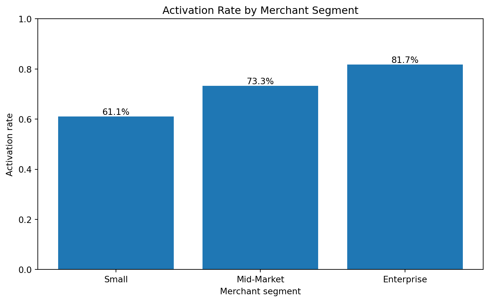
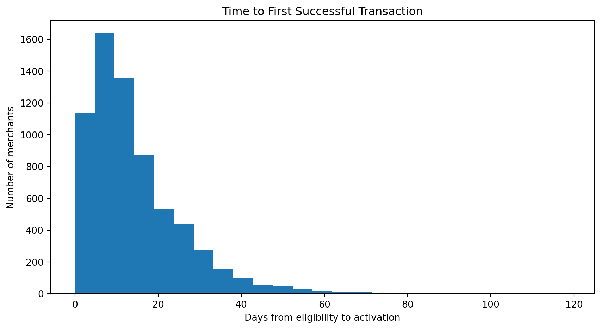
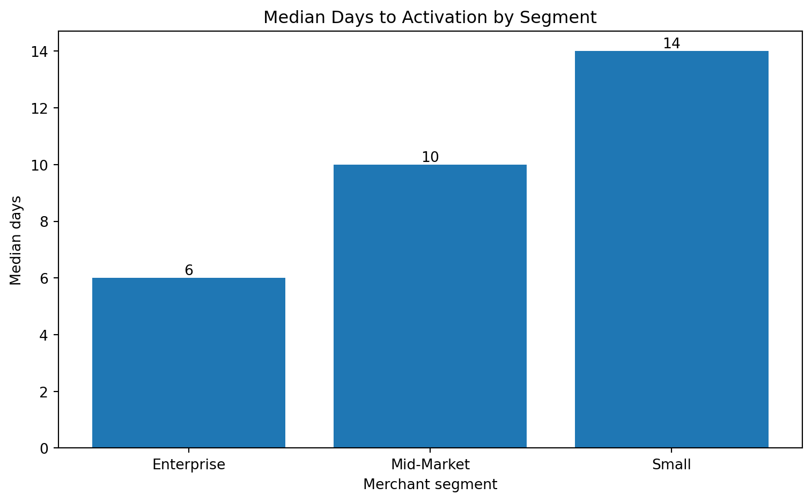
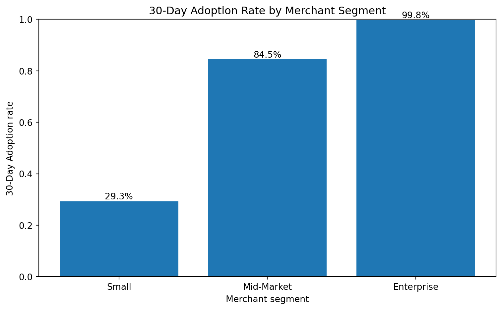
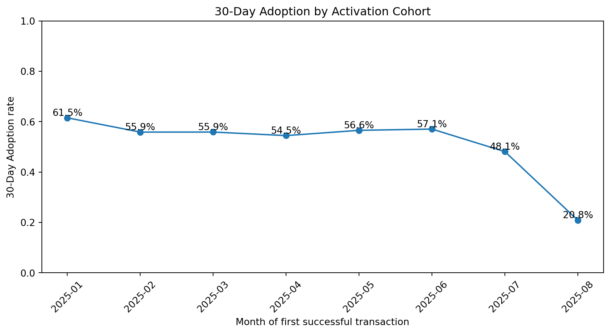
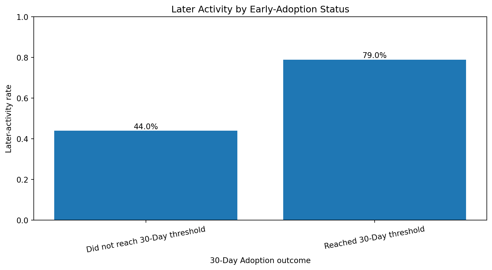
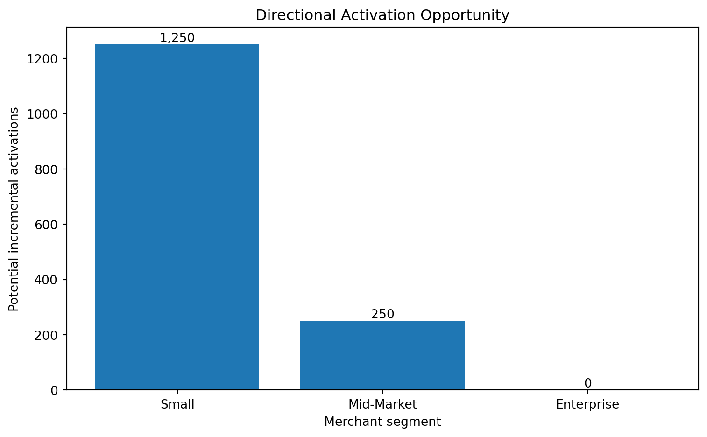

| Metric | Value | |
|---|---|---|
| 0 | Eligible merchants | 10,000 |
| 1 | Activated merchants | 6,673 |
| 2 | Activation rate | 66.7% |
| 3 | Median days to activation | 11 |
Analytical Walkthrough
Activation, 30-Day Adoption and later activity using synthetic merchant data
A reproducible public replica using synthetic data and independently written Python and SQL.
About this analytical replica
This walkthrough uses synthetic merchant data and independently written code to demonstrate an analytical approach inspired by my real product analytics work.
The analysis is intentionally simplified so the metric definitions, calculations, insights and decisions can be communicated clearly in a public and reproducible format.
A production implementation would contain considerably more detail, including eligibility and exclusion rules, event-quality validation, merchant identity resolution, transaction reversals and refunds, market and product differences, rollout timing, cohort maturity, statistical uncertainty, operational constraints and financial impact.
It contains no confidential company data, proprietary metric definitions, internal dashboards or production code. All numerical findings are illustrative and should not be interpreted as actual company results.
Analysis summary
This synthetic replica evaluates three connected dimensions of merchant behavior:
- activation through a first successful transaction;
- early transaction depth during days 0–30;
- activity during days 31–60.
Key findings
Activation: 6,673 of 10,000 eligible merchants complete a first successful transaction, an activation rate of 66.7%.
Activation speed: The median activated merchant completes its first successful transaction in 11 days.
30-Day Adoption: Among activated merchants with a complete 30-day observation window, 55.8% complete at least 10 successful transactions during days 0–30.
Later activity: Among activated merchants with a complete 60-day observation window, 63.6% complete at least one successful transaction during days 31–60.
Largest activation opportunity: The Small segment represents the largest directional activation opportunity.
Cohort variation: 30-Day Adoption ranges from 20.8% to 61.5% across mature synthetic activation cohorts.
Recommended decisions
Address activation before focusing only on deeper usage.
Merchants cannot develop repeated usage until they complete a first successful transaction.Examine activation speed as well as activation rate.
Delayed activation may reveal friction even when merchants eventually activate.Separate initial value from early transaction depth.
One successful transaction and 10 transactions during days 0–30 represent different product outcomes.Measure later activity with a concrete observation window.
Later active means at least one successful transaction during days 31–60.Use only mature cohorts.
Each metric should include only merchants with a complete observation window.Treat relationships as descriptive unless incrementality is measured.
Strong early adopters may already differ in readiness, demand, size or product fit.
Back to the executive case study
Measurement framework
Eligible
↓
Activated
= first successful new-platform transaction
↓
30-Day Adoption
= 10+ successful transactions during days 0–30
↓
Later active
= 1+ successful transaction during days 31–60The analytical definitions are:
- Eligible: The merchant belongs to the population able to use the new platform.
- Activated: The merchant completes its first successful new-platform transaction.
- Time to activation: Days between eligibility and activation.
- 30-Day Adoption: At least 10 successful transactions during days 0–30 after activation.
- Later active: At least one successful transaction during days 31–60 after activation.
- Activation cohort: Month of the first successful transaction.
- Mature 30-day merchant: Activation occurred at least 30 days before the analysis date.
- Mature 60-day merchant: Activation occurred at least 60 days before the analysis date.
Activation analysis
Activation measures whether eligible merchants complete a first successful transaction.
| Segment | Eligible | Activated | Activation rate | Median days to activation | |
|---|---|---|---|---|---|
| 0 | Enterprise | 985 | 805 | 81.7% | 6 |
| 1 | Mid-Market | 2967 | 2175 | 73.3% | 10 |
| 2 | Small | 6048 | 3693 | 61.1% | 14 |
Show code
activation_order = segment_summary.sort_values(
"activation_rate"
)
plt.figure(figsize=(8, 5))
bars = plt.bar(
activation_order["segment"],
activation_order["activation_rate"]
)
plt.title("Activation Rate by Merchant Segment")
plt.xlabel("Merchant segment")
plt.ylabel("Activation rate")
plt.ylim(0, 1)
for bar, rate in zip(
bars,
activation_order["activation_rate"]
):
plt.text(
bar.get_x() + bar.get_width() / 2,
bar.get_height(),
f"{rate:.1%}",
ha="center",
va="bottom"
)
plt.tight_layout()
plt.show()
Interpretation
The Small segment has the lowest activation rate at 61.1%, compared with 81.7% for the Enterprise segment.
The weakest percentage does not automatically represent the highest-value intervention. Population size, merchant value, addressability and implementation effort must also be considered.
Time to activation
Activation rate does not show how quickly merchants realize value.
Show code
activated_merchants = merchant_data.loc[
merchant_data["activated"]
].copy()
plt.figure(figsize=(9, 5))
plt.hist(
activated_merchants["days_to_activation"],
bins=25
)
plt.title("Time to First Successful Transaction")
plt.xlabel("Days from eligibility to activation")
plt.ylabel("Number of merchants")
plt.tight_layout()
plt.show()
Show code
time_order = segment_summary.sort_values(
"median_days_to_activation"
)
plt.figure(figsize=(8, 5))
bars = plt.bar(
time_order["segment"],
time_order["median_days_to_activation"]
)
plt.title("Median Days to Activation by Segment")
plt.xlabel("Merchant segment")
plt.ylabel("Median days")
for bar, days in zip(
bars,
time_order["median_days_to_activation"]
):
plt.text(
bar.get_x() + bar.get_width() / 2,
bar.get_height(),
f"{days:.0f}",
ha="center",
va="bottom"
)
plt.tight_layout()
plt.show()
Longer activation times may indicate onboarding friction, delayed integration, unclear value or merchant-readiness constraints.
A production analysis would examine the full activation curve rather than relying only on a median.
30-Day Adoption
Activation measures first value realization.
30-Day Adoption measures whether that first transaction develops into meaningful early transaction depth.
| Metric | Value | |
|---|---|---|
| 0 | Mature 30-day activated merchants | 6,673 |
| 1 | 30-Day adopters | 3,723 |
| 2 | 30-Day Adoption rate | 55.8% |
| Segment | Mature activated merchants | 30-Day adopters | 30-Day Adoption rate | |
|---|---|---|---|---|
| 0 | Enterprise | 805 | 803 | 99.8% |
| 1 | Mid-Market | 2175 | 1837 | 84.5% |
| 2 | Small | 3693 | 1083 | 29.3% |
Show code
adoption_order = segment_summary.sort_values(
"adoption_30d_rate"
)
plt.figure(figsize=(8, 5))
bars = plt.bar(
adoption_order["segment"],
adoption_order["adoption_30d_rate"]
)
plt.title("30-Day Adoption Rate by Merchant Segment")
plt.xlabel("Merchant segment")
plt.ylabel("30-Day Adoption rate")
plt.ylim(0, 1)
for bar, rate in zip(
bars,
adoption_order["adoption_30d_rate"]
):
plt.text(
bar.get_x() + bar.get_width() / 2,
bar.get_height(),
f"{rate:.1%}",
ha="center",
va="bottom"
)
plt.tight_layout()
plt.show()
Interpretation
The Small segment has the lowest 30-Day Adoption rate at 29.3%, compared with 99.8% for the Enterprise segment.
This is a descriptive comparison. It does not establish that segment causes the difference or that the full performance gap can be eliminated.
Activation-cohort analysis
The cohort is based on the month of the merchant’s first successful transaction.
Only merchants with a complete 30-day observation window are included.
| Activation month | Activated merchants | 30-Day adopters | Median days to activation | 30-Day Adoption rate | |
|---|---|---|---|---|---|
| 0 | 2025-01 | 642 | 395 | 8 | 61.5% |
| 1 | 2025-02 | 1031 | 576 | 11 | 55.9% |
| 2 | 2025-03 | 1122 | 627 | 12 | 55.9% |
| 3 | 2025-04 | 1105 | 602 | 12 | 54.5% |
| 4 | 2025-05 | 1188 | 672 | 11 | 56.6% |
| 5 | 2025-06 | 1062 | 606 | 11 | 57.1% |
| 6 | 2025-07 | 499 | 240 | 19 | 48.1% |
| 7 | 2025-08 | 24 | 5 | 44 | 20.8% |
Show code
plt.figure(figsize=(9, 5))
plt.plot(
cohort_summary["activation_month"],
cohort_summary["adoption_30d_rate"],
marker="o"
)
plt.title("30-Day Adoption by Activation Cohort")
plt.xlabel("Month of first successful transaction")
plt.ylabel("30-Day Adoption rate")
plt.ylim(0, 1)
plt.xticks(rotation=45)
for month, rate in zip(
cohort_summary["activation_month"],
cohort_summary["adoption_30d_rate"]
):
plt.text(
month,
rate,
f"{rate:.1%}",
ha="center",
va="bottom"
)
plt.tight_layout()
plt.show()
Interpretation
30-Day Adoption ranges from 20.8% in the 2025-08 cohort to 61.5% in the 2025-01 cohort.
The observed difference is 40.7%.
The equal observation window makes these cohorts structurally comparable. A production analysis would still require uncertainty estimates and adjustments for merchant mix, rollout timing and seasonality.
Later activity during days 31–60
Later active is defined as completing at least one successful new-platform transaction during days 31–60 after activation.
Only merchants with a complete 60-day observation window are included.
| Metric | Value | |
|---|---|---|
| 0 | Mature 60-day activated merchants | 6,653 |
| 1 | Later-active merchants | 4,229 |
| 2 | Later-activity rate | 63.6% |
| Early-adoption status | Merchants | Later-active merchants | Later-activity rate | |
|---|---|---|---|---|
| 0 | Did not reach 30-Day threshold | 2933 | 1291 | 44.0% |
| 1 | Reached 30-Day threshold | 3720 | 2938 | 79.0% |
Show code
plt.figure(figsize=(9, 5))
bars = plt.bar(
later_activity_by_adoption["early_adoption_status"],
later_activity_by_adoption["later_activity_rate"]
)
plt.title("Later Activity by Early-Adoption Status")
plt.xlabel("30-Day Adoption outcome")
plt.ylabel("Later-activity rate")
plt.ylim(0, 1)
for bar, rate in zip(
bars,
later_activity_by_adoption["later_activity_rate"]
):
plt.text(
bar.get_x() + bar.get_width() / 2,
bar.get_height(),
f"{rate:.1%}",
ha="center",
va="bottom"
)
plt.xticks(rotation=10)
plt.tight_layout()
plt.show()
Interpretation
Merchants reaching the 30-Day Adoption threshold are more likely, in this synthetic replica, to complete at least one transaction during days 31–60.
This evaluates early adoption as a possible leading indicator of later activity. It does not establish that reaching 10 transactions causes later activity.
Merchants with stronger early usage may already differ in size, demand, readiness, integration quality or product fit.
The synthetic generator intentionally includes this relationship to demonstrate the analytical method. A production analysis would need to test whether the association remains after accounting for pre-existing differences.
Opportunity sizing
The analysis sizes two separate opportunities:
- increasing activation among eligible merchants;
- increasing early transaction depth among activated merchants.
Activation opportunity
| Segment | Eligible merchants | Activation rate | Gap to benchmark | Directional incremental activations | |
|---|---|---|---|---|---|
| 0 | Small | 6048 | 61.1% | 20.7% | 1250 |
| 1 | Mid-Market | 2967 | 73.3% | 8.4% | 250 |
| 2 | Enterprise | 985 | 81.7% | 0.0% | 0 |
Show code
plt.figure(figsize=(8, 5))
bars = plt.bar(
activation_opportunity["segment"],
activation_opportunity[
"incremental_activations_if_gap_closed"
]
)
plt.title("Directional Activation Opportunity")
plt.xlabel("Merchant segment")
plt.ylabel("Potential incremental activations")
for bar, opportunity in zip(
bars,
activation_opportunity[
"incremental_activations_if_gap_closed"
]
):
plt.text(
bar.get_x() + bar.get_width() / 2,
bar.get_height(),
f"{opportunity:,}",
ha="center",
va="bottom"
)
plt.tight_layout()
plt.show()
Early-adoption opportunity
| Segment | Mature activated merchants | 30-Day Adoption rate | Gap to benchmark | Directional incremental adopters | |
|---|---|---|---|---|---|
| 0 | Small | 3693 | 29.3% | 70.4% | 2601 |
| 1 | Mid-Market | 2175 | 84.5% | 15.3% | 333 |
| 2 | Enterprise | 805 | 99.8% | 0.0% | 0 |
Interpretation
The largest directional activation opportunity appears in the Small segment, representing approximately 1,250 additional activations if the observed benchmark gap were closed.
The largest directional early-adoption opportunity appears in the Small segment, representing approximately 2,601 additional 30-Day adopters.
These are benchmark scenarios, not causal forecasts. They help prioritize further investigation but do not prove that the full gaps are addressable.
Decision framework
- Eligible population: How many merchants are affected?
- Activation gap: How far is activation from a relevant benchmark?
- Time to activation: Where is value realization being delayed?
- Early-adoption gap: How many activated merchants fail to develop meaningful transaction depth?
- Later-activity gap: How many mature merchants record no activity during days 31–60?
- Expected business value: What value could improved behavior create?
- Addressability: Is the gap likely to respond to a product intervention?
- Implementation effort: What engineering, design and operational work is required?
- Measurement feasibility: Can the intervention be evaluated credibly?
The final prioritization should combine analytical opportunity with value, feasibility, strategic relevance and measurement quality.
Technical appendix
Synthetic-data methodology
The dataset contains 10,000 fictional eligible merchants distributed across three segments, four markets and multiple eligibility dates.
The synthetic process generates:
- whether each merchant activates;
- days from eligibility to activation;
- successful transactions during days 0–30;
- whether the merchant reaches the 30-Day Adoption threshold;
- successful transactions during days 31–60;
- whether the merchant is later active.
| merchant_id | segment | market | eligible_date | activated | activation_date | days_to_activation | successful_transactions_days_0_30 | adopted_30d | successful_transactions_days_31_60 | later_active | mature_30d | mature_60d | |
|---|---|---|---|---|---|---|---|---|---|---|---|---|---|
| 0 | 1 | Mid-Market | Latin America | 2025-06-12 | False | NaT | NaN | 0 | False | 0 | False | False | False |
| 1 | 2 | Small | Latin America | 2025-05-15 | False | NaT | NaN | 0 | False | 0 | False | False | False |
| 2 | 3 | Mid-Market | North America | 2025-02-07 | False | NaT | NaN | 0 | False | 0 | False | False | False |
| 3 | 4 | Mid-Market | North America | 2025-06-30 | True | 2025-07-10 | 10.00 | 11 | True | 10 | True | True | True |
| 4 | 5 | Small | North America | 2025-06-29 | True | 2025-07-05 | 6.00 | 9 | False | 0 | False | True | True |
| 5 | 6 | Enterprise | North America | 2025-01-08 | True | 2025-01-14 | 6.00 | 28 | True | 21 | True | True | True |
| 6 | 7 | Mid-Market | Europe | 2025-01-05 | True | 2025-01-26 | 21.00 | 11 | True | 9 | True | True | True |
| 7 | 8 | Mid-Market | Asia Pacific | 2025-02-14 | False | NaT | NaN | 0 | False | 0 | False | False | False |
| 8 | 9 | Small | North America | 2025-05-24 | False | NaT | NaN | 0 | False | 0 | False | False | False |
| 9 | 10 | Small | North America | 2025-04-19 | False | NaT | NaN | 0 | False | 0 | False | False | False |
The differences across segments and early-adoption groups are intentionally encoded for demonstration.
The synthetic model is designed to demonstrate the analytical workflow, not to reproduce the full complexity of a production merchant platform.
Data-quality validation
Before interpreting the results, the analysis checks that the derived dates, transaction metrics and merchant statuses follow the expected business logic.
The validation covers:
- activated merchants must have an activation date;
- non-activated merchants must not have an activation date;
- a merchant cannot reach 30-Day Adoption without activating;
- a merchant cannot be later active without activating;
- a later-active merchant must have at least one successful transaction during days 31–60;
- merchant IDs must be unique;
- activation delays cannot be negative;
- activation dates cannot occur before eligibility dates.
The following code runs those checks and counts the records that violate each rule.
Show code
validation_checks = pd.DataFrame({
"Validation check": [
"Activated merchant without activation date",
"Non-activated merchant with activation date",
"30-Day adopter without activation",
"Later-active merchant without activation",
"Later-active merchant with zero transactions in days 31–60",
"Duplicate merchant ID",
"Negative activation delay",
"Activation date before eligibility date"
],
"Invalid records": [
(
merchant_data["activated"]
& merchant_data["activation_date"].isna()
).sum(),
(
~merchant_data["activated"]
& merchant_data["activation_date"].notna()
).sum(),
(
merchant_data["adopted_30d"]
& ~merchant_data["activated"]
).sum(),
(
merchant_data["later_active"]
& ~merchant_data["activated"]
).sum(),
(
merchant_data["later_active"]
& (
merchant_data[
"successful_transactions_days_31_60"
] == 0
)
).sum(),
merchant_data["merchant_id"]
.duplicated()
.sum(),
(
merchant_data["days_to_activation"] < 0
).sum(),
(
merchant_data["activation_date"]
< merchant_data["eligible_date"]
).sum()
]
})
total_invalid_records = int(
validation_checks["Invalid records"].sum()
)
display(validation_checks)| Validation check | Invalid records | |
|---|---|---|
| 0 | Activated merchant without activation date | 0 |
| 1 | Non-activated merchant with activation date | 0 |
| 2 | 30-Day adopter without activation | 0 |
| 3 | Later-active merchant without activation | 0 |
| 4 | Later-active merchant with zero transactions in days 31–60 | 0 |
| 5 | Duplicate merchant ID | 0 |
| 6 | Negative activation delay | 0 |
| 7 | Activation date before eligibility date | 0 |
Validation result: All checks passed. No invalid activation sequences, transaction-derived flags, duplicate merchant IDs or inconsistent dates were detected.
Illustrative SQL implementation
The following SQL illustrates how activation, 30-Day Adoption and later activity could be derived from eligibility and transaction tables.
It is not connected to a production database and does not reproduce proprietary company logic.
WITH eligible_merchants AS (
SELECT
merchant_id,
eligible_date,
merchant_segment,
market
FROM merchant_eligibility
),
successful_transactions AS (
SELECT
merchant_id,
transaction_timestamp
FROM transactions
WHERE platform = 'new_platform'
AND transaction_status = 'successful'
),
activation AS (
SELECT
e.merchant_id,
e.eligible_date,
e.merchant_segment,
e.market,
MIN(t.transaction_timestamp)
AS activation_timestamp
FROM eligible_merchants AS e
LEFT JOIN successful_transactions AS t
ON e.merchant_id = t.merchant_id
AND t.transaction_timestamp >= e.eligible_date
GROUP BY
e.merchant_id,
e.eligible_date,
e.merchant_segment,
e.market
),
behavior_windows AS (
SELECT
a.merchant_id,
a.eligible_date,
a.merchant_segment,
a.market,
a.activation_timestamp,
DATE_DIFF(
DATE(a.activation_timestamp),
DATE(a.eligible_date),
DAY
) AS days_to_activation,
COUNTIF(
t.transaction_timestamp
>= a.activation_timestamp
AND t.transaction_timestamp
< TIMESTAMP_ADD(
a.activation_timestamp,
INTERVAL 30 DAY
)
) AS transactions_days_0_30,
COUNTIF(
t.transaction_timestamp
>= TIMESTAMP_ADD(
a.activation_timestamp,
INTERVAL 30 DAY
)
AND t.transaction_timestamp
< TIMESTAMP_ADD(
a.activation_timestamp,
INTERVAL 60 DAY
)
) AS transactions_days_31_60
FROM activation AS a
LEFT JOIN successful_transactions AS t
ON a.merchant_id = t.merchant_id
AND t.transaction_timestamp
>= a.activation_timestamp
AND t.transaction_timestamp
< TIMESTAMP_ADD(
a.activation_timestamp,
INTERVAL 60 DAY
)
WHERE a.activation_timestamp IS NOT NULL
GROUP BY
a.merchant_id,
a.eligible_date,
a.merchant_segment,
a.market,
a.activation_timestamp
),
merchant_metrics AS (
SELECT
*,
CASE
WHEN transactions_days_0_30 >= 10
THEN 1
ELSE 0
END AS adopted_30d,
CASE
WHEN transactions_days_31_60 >= 1
THEN 1
ELSE 0
END AS later_active
FROM behavior_windows
)
SELECT
DATE_TRUNC(
DATE(activation_timestamp),
MONTH
) AS activation_month,
merchant_segment,
COUNT(*) AS activated_merchants,
COUNTIF(adopted_30d = 1)
AS adopted_30d_merchants,
SAFE_DIVIDE(
COUNTIF(adopted_30d = 1),
COUNT(*)
) AS adoption_30d_rate,
COUNTIF(later_active = 1)
AS later_active_merchants,
SAFE_DIVIDE(
COUNTIF(later_active = 1),
COUNT(*)
) AS later_activity_rate,
APPROX_QUANTILES(
days_to_activation,
2
)[OFFSET(1)] AS median_days_to_activation
FROM merchant_metrics
WHERE activation_timestamp
<= TIMESTAMP_SUB(
CURRENT_TIMESTAMP(),
INTERVAL 60 DAY
)
GROUP BY
activation_month,
merchant_segment
ORDER BY
activation_month,
merchant_segment;In production, 30-Day Adoption could be reported after 30 days, while later activity requires 60 days of observation. These metrics would normally use separate maturity filters rather than forcing every output to use the stricter 60-day population.
Limitations
This public replica is intentionally simplified.
A production analysis would also require:
- precise eligibility and exclusion rules;
- merchant identity resolution;
- failed, reversed and refunded transaction handling;
- multiple currencies and transaction types;
- exact boundary conventions for days 0, 30 and 60;
- exclusion of immature cohorts;
- confidence intervals and statistical testing;
- adjustment for merchant mix, rollout timing and seasonality;
- market and product constraints;
- richer definitions of later activity;
- incremental-impact measurement;
- financial value and implementation-cost estimates;
- privacy, legal and regulatory review.
What this walkthrough demonstrates
This public analysis demonstrates how I structure product-growth analytics:
- define activation through an observable value-generating event;
- analyze activation rate and activation speed separately;
- distinguish first use from meaningful transaction depth;
- use fixed observation windows for cohort comparability;
- define later activity through a concrete transaction event;
- distinguish association from causality;
- validate analytical data before interpreting results;
- size activation and adoption opportunities separately;
- translate findings into product decisions.
The numerical findings are illustrative and are not actual company results.